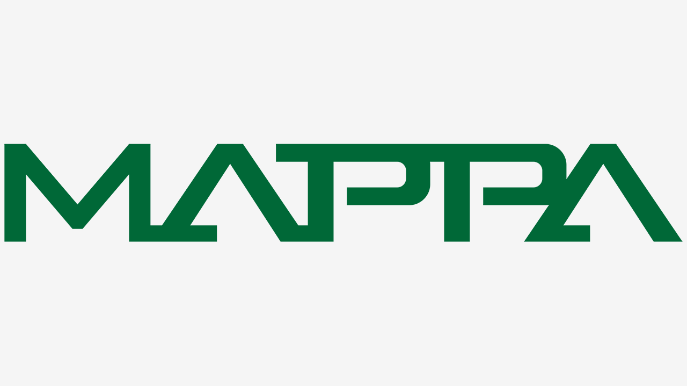
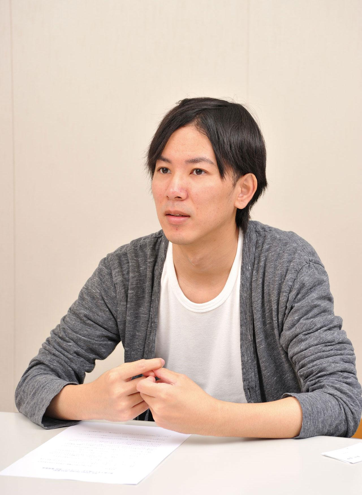

Attack on Titan, created by Hajime Isayama, began as a manga published in 2009. Its popularity led to the development of an animated television adaptation, which premiered in April 2013.
The anime adaptation brought the story to life through animation, voice acting, music and visual direction. Throughout its production, the series went through several creative and technical stages, gradually developing its visual identity and presentation.
One of the most notable aspects of the anime's production was the change of animation studios before its final season, marking a new phase in the adaptation.
WIT Studio was responsible for the first three seasons of Attack on Titan, from 2013 to 2019. The studio helped establish the anime's visual identity, with detailed backgrounds, dynamic action sequences and expressive character animation. Its work played an important role in bringing the original manga to television and introducing the series to a wider international audience.

MAPPA took over the animation production for The Final Season, which premiered in December 2020. The change brought a different visual approach to the series, with updated character designs, animation techniques and a new production team. MAPPA continued the adaptation through its final episodes, concluding the anime in November 2023.

Hajime Isayama is a Japanese manga artist best known for creating Attack on Titan, originally titled Shingeki no Kyojin.
Born on August 29, 1986, in Ōyama, Ōita Prefecture, Japan, Isayama began his professional manga career with the publication of Attack on Titan in 2009.
The manga was serialized in Kodansha's Bessatsu Shōnen Magazine and concluded in April 2021, after more than eleven years of publication.
His work became internationally recognized for its complex narrative, worldbuilding and exploration of themes such as freedom, conflict and human nature.
Known for his orchestral arrangements, powerful percussion and electronic elements, Sawano created many of the series' recognizable musical themes.
Yamamoto collaborated on the soundtrack for The Final Season, introducing new musical themes while maintaining the atmosphere of the series.
Explore music from the world of Attack on Titan.